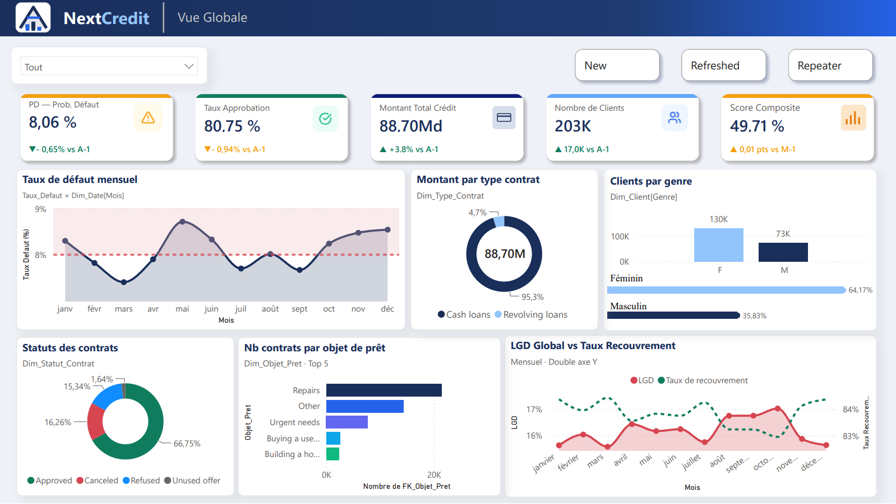
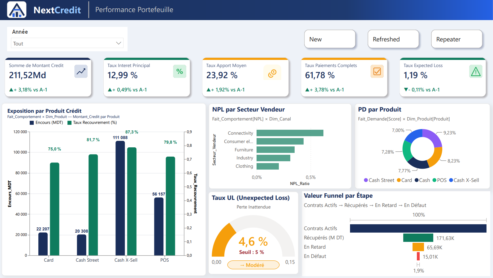
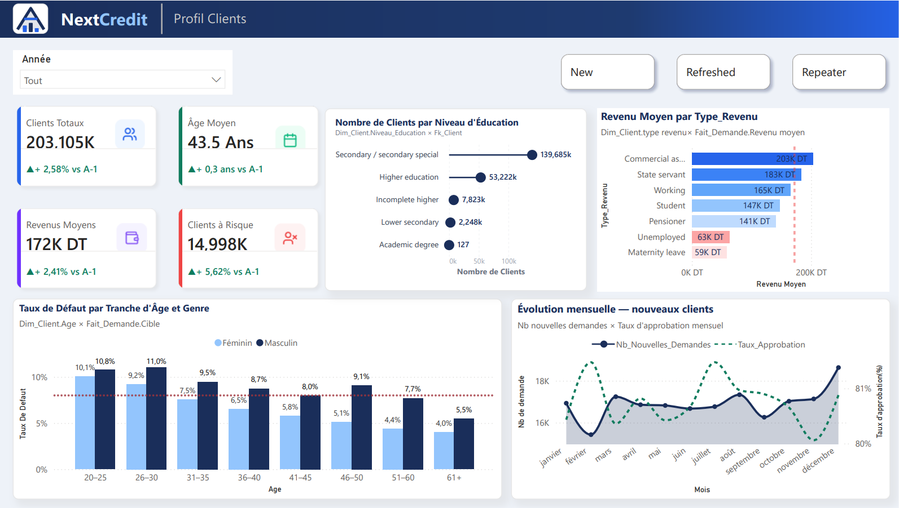
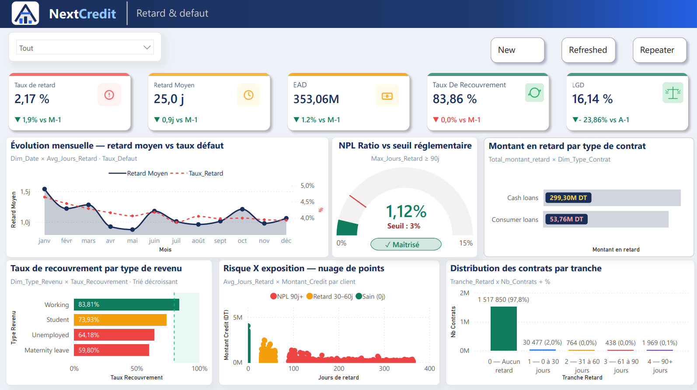

Projet phare · PFE · Teamwill Consulting · Nov. 2025 – Août 2026
NextCredit — Plateforme BI & IA pour le risque de crédit
Business Intelligence · Machine Learning · IA explicable · Assistant RAG
Contexte
Une institution financière a besoin de suivre son portefeuille de crédit, d'anticiper le défaut de ses clients et de justifier chaque décision d'octroi. Les données (demandes de crédit, comportement de paiement, profils clients) étaient dispersées et peu exploitables.
Ce que j'ai réalisé
- Conception du data warehouse (modèle en étoile :
Fait_Demande,Fait_Comportement, dimensions Client, Date, Produit, Contrat, Canal…). - Développement des pipelines ETL avec Talend & SQL Server pour intégrer, nettoyer et historiser les données.
- 4 dashboards Power BI : Vue globale, Performance portefeuille, Profil clients, Retard & défaut.
- Calcul des indicateurs de risque réglementaires : PD, LGD, EAD, Expected Loss, Unexpected Loss, ratio NPL, taux de recouvrement.
- Modèles de Machine Learning de prédiction du défaut, rendus transparents avec SHAP & LIME.
- Assistant RAG propulsé par un LLM pour interroger les indicateurs et comprendre les explications des décisions en langage naturel.
- Intégration dans une application web (API Flask + front Angular).



